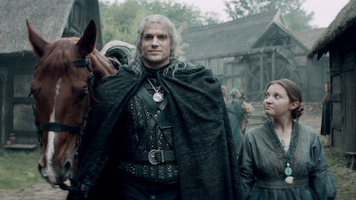
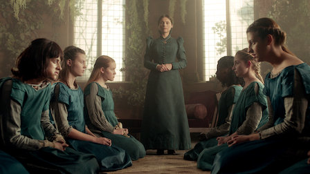
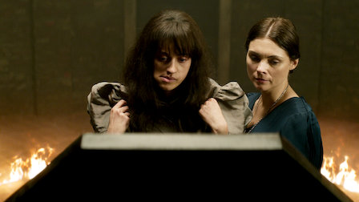
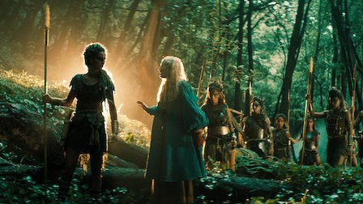
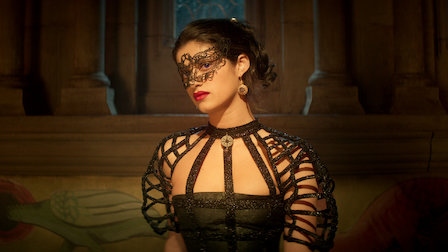
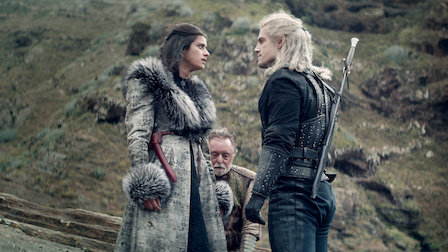
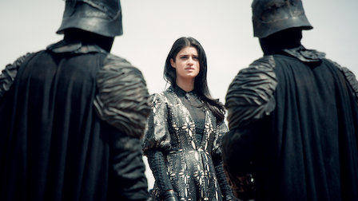
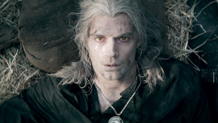

1. The End’s Beginning

Hostile townsfolk and a cunning mage greet Geralt in the town of Blaviken. Ciri finds her royal world upended when Nilfgaard sets its sights on Cintra.
2. Four Marks

Bullied and neglected, Yennefer accidentally finds a means of escape. Geralt's hunt for a so-called devil goes to hell. Ciri seeks safety in numbers.
3. Betrayer Moon

Geralt takes on another Witcher's unfinished business in a kingdom stalked by a ferocious beast. At a brutal cost, Yennefer forges a magical new future.
4. Of Banquets, Bastards and Burials

Against his better judgment, Geralt accompanies Jaskier to a royal ball. Ciri wanders into an enchanted forest. Yennefer tries to protect her charges.
5. Bottled Appetites

Heedless of warnings, Yennefer looks for a cure to restore what she's lost. Geralt inadvertently puts Jaskier in peril. The search for Ciri intensifies.
6. Rare Species

A mysterious man tries to entice Geralt to join a hunt for a rampaging dragon, a quest that attracts a familiar face. Ciri questions who she can trust.
7. Before a Fall

With the Continent at risk from Nilfgaard's rising power, Yennefer revisits her past, while Geralt reconsiders his obligation to the Law of Surprise.
8. Much More

A terrifying pack of foes lays Geralt low. Yennefer and her fellow mages prepare to fight back. A shaken Ciri depends on the kindness of a stranger.